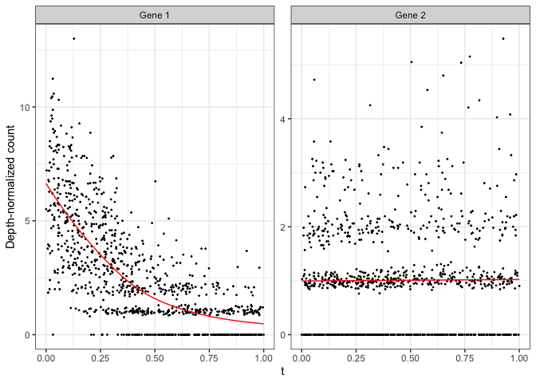

MorphoGAM: Detect spatially variable genes by projecting to morphologically relevant curves ================ R package version 1.1.0
System Requirements
R is required to use MorphoGAM. In development, R version 4.3.0 and greater were used, but there may be compatibility with previous versions.
Installation
From the R console, devtools::install_github("phillipnicol/MorphoGAM"). Installation should take less than a minute on a standard machine.
Demo
This demonstration should complete in a few minutes on a standard computer.
Step 1: Estimate morphologically relevant coordinates
The first step in running MorphoGAM is to define a curve from which the morphologically relevant coordinates are defined. To demonstrate this, we use the swiss roll example:
set.seed(1)
library(MorphoGAM)
library(tidyverse)
xy <- MorphoGAM:::makeSwissRoll()
data.frame(x=xy[,1],y=xy[,2]) |> ggplot(aes(x=x,y=y)) +
geom_point(size=0.5) + theme_bw()
The function CurveFinder() applies the automatic curve estimation method
fit <- CurveFinder(xy)The fit object contains plots of the first two morphologically relevant coordinates and the fitted curve:
fit$curve.plot
fit$coordinate.plot #First morphologically relevant coordinate 
fit$residuals.plot #Second morphologically relevant coordinate
The morphologically relevant coordintes can be accessed via fit$xyt:
fit$xyt |> head()## x y t r f1 f2
## 1 -0.5570179 0.3213394 0.2050271 0.4133826 -0.5474196 0.3125001
## 2 -0.5829042 -0.4035348 0.2980582 0.4115648 -0.5730570 -0.3944718
## 3 0.6330314 -0.3873620 0.4895029 0.7098784 0.6685151 -0.4089267
## 4 -0.8982847 0.2923785 0.8824209 0.6039158 -0.9116261 0.3098966
## 5 -0.2294434 0.5582292 0.1530027 0.4402809 -0.2343397 0.5517795
## 6 -0.8106100 0.3995968 0.8657898 0.6428067 -0.8339070 0.4171639In some cases the user may wish to draw the curve by hand. For this we provide an interactive shiny app that can be run locally using the function CurveFinderInteractive(). Once the app is running you can click the sequence of points defining the curve, then press the “Smooth” button to fit the curve. Once the smoothing is done the app can be closed and fit will be returned.
#Running this opens a shiny app
fit <- CurveFinderInteractive(xy)Step 2: Apply GAM to morphologically relevant coordinates
The next step is to identify genes with variable expression along the curve (or in the orthogonal direction). Here we generate a synthetic count matrix Y with one spatially interesting gene:
Y <- matrix(rpois(100*nrow(xy), lambda=1),
nrow=100, ncol=nrow(xy))
eta <- -3*fit$xyt$t + 2
Y[1,] <- rpois(nrow(xy),lambda=exp(eta))
rownames(Y) <- paste("Gene", 1:nrow(Y))Now we apply the generalized additive model (GAM):
mgam <- MorphoGAM(Y, curve.fit=fit,
design = y ~ s(t, bs="cr"))## ================================================================================
## Warning in irlba::irlba(fxs.r): fast code path error starting vector near the
## null space; re-trying with fastpath=FALSE.
## Error in irlba::irlba(fxs.r) : starting vector near the null spaceThe bs = "cr" specifies cubic regression splines in the GAM, although this can be modified to periodic splines or other basis functions provided by mgcv. We may wish to sort the results matrix to rank genes by summaries of the estimated function:
mgam$results |> arrange(desc(peak.t)) |> head()## peak.t range.t pv.t peak.r range.r pv.r intercept
## Gene 1 1.18349653 5.40344926 0.0000000000 0 0 0 -3.953473
## Gene 33 0.10195765 0.18728675 0.0002472835 0 0 0 -4.618065
## Gene 20 0.06313620 0.11151799 0.0063965136 0 0 0 -4.647023
## Gene 49 0.04881890 0.05290388 0.0506582449 0 0 0 -4.682800
## Gene 16 0.03538251 0.04356503 0.0392955411 0 0 0 -4.610617
## Gene 10 0.03233560 0.03115972 0.2185367051 0 0 0 -4.645891The results indicate gene has a significant peak and range (region of increased expression), and we can visually confirm this by using plotGAMestimate() to plot the entire function:
plotGAMestimates(Y,genes=c("Gene 1", "Gene 2"),
mgam_object = mgam,
curve_fit=fit,
type="t")
To also identify genes that vary in the direction of the second morphologically relevant coordinate, add the term s(r, ...) to the design argument in MorphoGAM.
mgam_with_r <- MorphoGAM(Y, curve.fit=fit,
design = y ~ s(t, bs="cr") + s(r, bs="cr"))